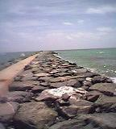
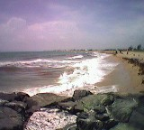

|
Tracks:
- Bike to Snorkel
|
|
| Contrary to certain urban legends, Palm Beach is not closed to the public. One does not need a pass to enter, the drawbridge does not go up at sunset anymore, banishing commoners to the mainland. The island's aura of exclusivity has only one last bastion of defense -- the parking meter maid. There is no parking within 3 or 4 miles of the inlet. The closest reliable free parking is on Seminole. There is a pretty little bike path along the western shore of the island. Follow this route to the beach. There is an almost hidden alley from the road to the beach. Bikes can be chained up there.
|
| 26.7713 -80.03481667 |
|
The snorkeling here is spectacular. There is not much coral, but there are tens of thousands of fishes. Stay to the south of the breakwater. Be careful, as one approaches the end of the barrier, the current is increasingly strong, and will pull you around into the inlet. The inlet is a busy shipping channel. Don't swim there.
|

|
Snorkeling is best in still, clear water. If the sea looks like this, leave the snorkel at home and bring a surfboard instead.
Check ocean conditions here:
geocities.com/palmbeachboating/
Surfline.com
Lifeguards Report Delray Beach Conditions
|
 |
| |